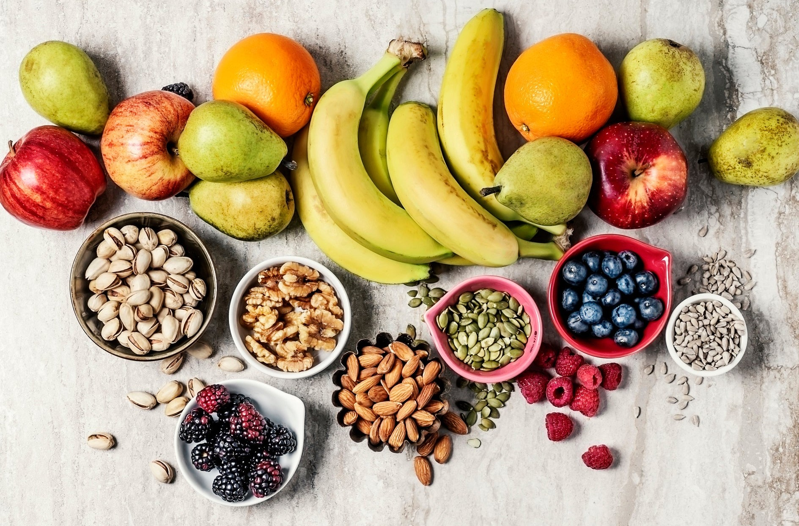
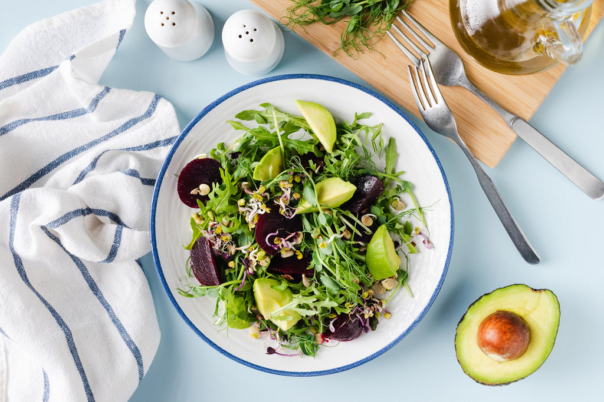

11 Ways to Eat Clean: Clean Eating Beginners Guide
- by Nature's Path 4 January 2025
Eating clean consists of eating whole, unprocessed foods and avoiding highly refined foods. Additionally, eating clean eliminates added sugars, unhealthy fats, and excess sodium. Although there are many variations of eating clean, it is primarily eating more fruits, vegetables, whole grains, legumes, nuts, seeds, and lean proteins. When it comes to getting started with eating clean, use this as a helpful guide for beginners.
Tips to help you get started:
1. Learn the Basics of Clean Eating
2. Identify Your Specific Goals
3. Portion Your Plates
4. Eat More Fruits and Vegetables in Every Meal
5. Make Water your Primary Drink of Choice
6. Limit Processed Foods
7. Find Healthy Recipes to Try Out
8. Reduce Salt and Added Sugars
9. Choose Organic
10. Snack the Smart Way
11. Eat Mindfully and Enjoy Every Bite
Learn the Basics of Clean Eating
Clean eating is simple. Choose whole foods and minimize eating highly processed and unrefined foods, including most fast food places. Include plenty of fiber, good fats, and protein in every meal to help you maintain full throughout the day. Also, watch out for artificial ingredients and avoid drinking your calories. Achieving optimal health does not come from counting calories, it comes from using healthy food in a way that maximizes your health.
Identify Your Specific Goals
It is important to identify your personal health goals and to understand why
you are doing them. Whether you're trying
to lose weight, reduce processed foods, choose healthier options, or exercise more, you need a
plan for your goals. Your
needs will determine what your goals will look like. For example, if you want to adopt healthier
eating habits, you may
switch from calorie-dense foods to a more nutrient-based diet that contains more fiber.
If your goals consist of losing weight, you may need to cut back on carbohydrates and integrate
more vegetables but
regardless of your goals, there is always room for eating healthier.
Portion Your Plates
Portioning your plate is another easy way to eat a well-balanced and clean meal. A good rule of thumb is to have ½ of your plate for vegetables, ¼ of the plate for lean protein or plant protein, and ¼ for healthy carbohydrates like whole grains. Breakfast may not work well with these portions, as they are designed for larger meals.
Eat More Fruits and Vegetables in Every Meal
Adding more fruits and vegetables to every meal is another great way to eat
clean.
Fruits and vegetables are packed with vitamins like vitamin A, C, and E, minerals, and lots of
antioxidants that help
reduce many diseases. A study conducted by Rautianen et al in The American Journal of Medicine
notes the connection
between cardiovascular disease prevention and a diet high in antioxidants. In other words,
eating fruits and vegetables
will have long-term benefits for your overall health.
If your meal does not include any vegetables, have a side salad before the main entree. For
breakfast you can blend a
delicious fruit smoothie and toss in some kale or add sliced apples to a tasty Cacao Oatmeal.
Make Water your Primary Drink of Choice
Drinking water has so many benefits. Making it your primary beverage is another way to get the most out of it.
Limit Processed Foods
Limit and avoid processed and refined foods such as white breads, pastas, frozen dinners,
vegetable oils, and sugary
snacks that are high calorie and low in nutritional value. Processed foods are the worst things
you can put in your
body. They are loaded with preservatives, chemicals, and other additives that are not necessary
for the body to function
effectively.
These foods cause disruptions in your body like bloating, hormonal imbalances, and lead to other
serious health issues.
Start eliminating these toxic foods immediately and you will begin to feel a lot better.
Find Healthy Recipes to Try Out
Find healthy recipes online and try them out. This will involve doing some research, making a grocery list, and preparing a home cooked meal. Eating clean does not have to be boring so get creative and use your resources. Don’t forget to check out the Nature’s Path recipe section for healthier options.
Reduce Salt and Added Sugars
Reduce salt and added sugar in foods, this means you should read your food labels. According to a study by Siyi Shangguan et al. (2018), they found that “More than 2 in 5 American adults have obesity (. . .), 1 in 2 have diabetes or prediabetes, and nearly 1 in 2 have CVD . . .” which in relation to consuming excess salt and added sugars. Reducing foods that contain too much sodium and sugars will aid in lowering blood sugars, help you lose weight, and reduce the risk of a heart attack or stroke. Remember that anything in excess is not good for you.
Consider Organic
Consider eating organic. Most organic foods are not processed with synthetic
fertilizers, nor are genetically modified
or contain other harmful chemicals. Eating organic guarantees that your produce, dairy,
proteins, and legumes are safe
for consumption.
You can purchase organic products at your local farmers market or grocery store. If you cannot
afford organic, consider
growing your own produce.
Snack the Smart Way
Instead of snacking on unhealthy potato chips, cookies, or other sugary
candies, snack the smart way by eating fruits or
other healthier options.
You can always snack on organic, gluten free chips or a small yogurt bowl with granola. Don’t be
tempted to take the
easy route, if you want to eat clean then snack smart.
Eat Mindfully and Enjoy Every Bite
Eat mindfully and enjoy every bite, this means chew your food and take your
time. In a world where we are constantly on
the go, it's important to take your time eating without distractions and stress.
Eating clean is not about completely restricting foods in your diet, but it's possible for
anyone to achieve a healthy
balance of nutrients through clean eating. The right foods replenish your body, heal your mind,
and optimize your energy
which will improve your overall health and quality of life.